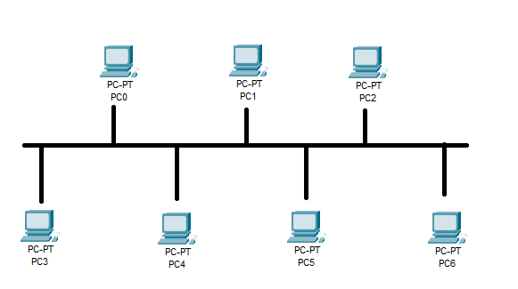
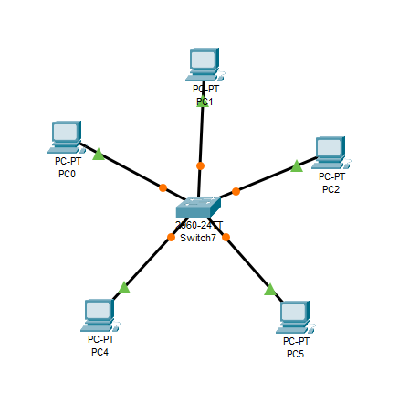
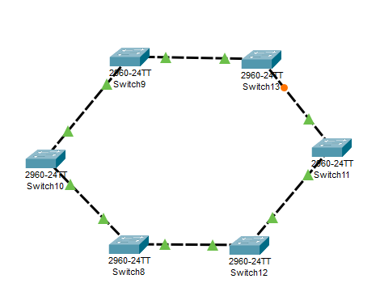
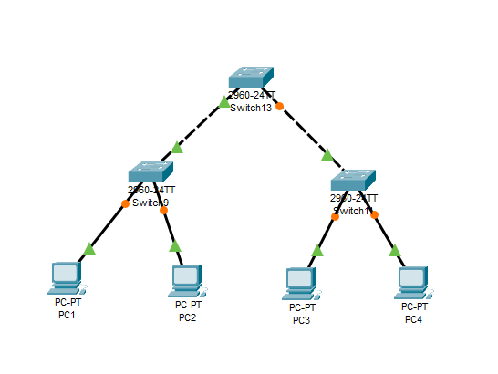
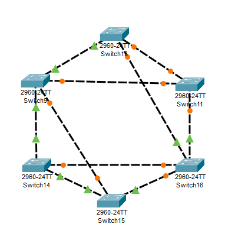
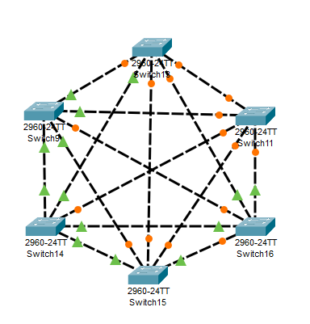

Architekt sítě
Poznej jednotlivé topologie a jejich výhody i nevýhody.
Lehká úloha
Topologie sítě určuje, jak jsou zařízení fyzicky nebo logicky propojena. Volba topologie ovlivňuje spolehlivost, výkon a náklady na síť. Rozlišujeme topologie na fyzické (skutečné zapojení kabelů) a logické (jak data putují).
Sběrnice (bus)
Všechna zařízení jsou připojena na jeden společný koaxiální kabel (sběrnici). Data putují po celé
délce — každé zařízení je přijme, zpracuje jen ta určená jemu.
Výhody: jednoduché
zapojení, málo kabeláže, snadné přidání stanice.
Nevýhody: přerušení kabelu
vyřadí celou síť, při velkém provozu kolize a zpomalení, obtížná lokalizace závady.
Dnes se v kabelových LAN sítích prakticky nepoužívá — byla typická pro starý Ethernet.
Hvězda (star)
Každé zařízení je připojeno k centrálnímu prvku (např. switch). Veškerá komunikace
prochází přes střed.
Výhody: výpadek jednoho kabelu nebo stanice neohrozí zbytek sítě,
snadná údržba a rozšíření, dobrý výkon.
Nevýhody: závislost na centrálním prvku
(jeho výpadek paralyzuje síť).
Dnes se běžně používá — je základem většiny lokálních sítí.
Kruh (ring)
Zařízení tvoří uzavřený okruh — data obíhají v jednom směru.
Každý uzel předává rámec dalšímu.
Výhody: rovnoměrné zatížení, žádné kolize,
předvídatelný přenos.
Nevýhody: přerušení kruhu může zastavit celou síť (u
odolnějších variant se provoz při výpadku zařízení jednoduše přesměruje druhou stranou kruhu), přidání nebo odebrání uzlu vyžaduje přerušení okruhu.
Používá se spíše výjimečně — např. v některých průmyslových nebo páteřních sítích. Známým příkladem byla technologie Token Ring.
Strom (tree)
Hierarchická struktura — z jednoho kořenového uzlu se větví další uzly, ty se zase větví.
Dalo by se tedy říct, že je to vlastně hierarchická struktura složená z více hvězdicových segmentů.
Výhody: škálovatelnost, oddělení segmentů,
vhodné pro větší sítě.
Nevýhody: závislost na kořenových prvcích, při poruše
vyšší úrovně může odpadnout celá větev.
Používá se u větších sítí a u poskytovatelů připojení (hierarchie routerů).
Síť (mesh)
Zařízení jsou propojena mnoha cestami — každý uzel může být spojen s několika dalšími
(částečná mesh) nebo se všemi (úplná mesh).
Výhody: vysoká odolnost proti
výpadkům, redundantní cesty, možnost vybrat nejvhodnější trasu.
Nevýhody: velké
množství kabelů a portů, vyšší náklady a složitější správa.
Používá se u Wi‑Fi mesh systémů, páteřních sítí a v datových centrech.
U každého obrázku napiš, o jakou topologii jde.

Jaká je to topologie?
Odpověď piš malými písmeny bez diakritiky.

Jaká je to topologie?
Odpověď piš malými písmeny bez diakritiky.

Jaká je to topologie?
Odpověď piš malými písmeny bez diakritiky.

Jaká je to topologie?
Odpověď piš malými písmeny bez diakritiky.

Jaká je to topologie?
Odpověď piš malými písmeny bez diakritiky.

Jaká je to topologie?
Odpověď piš malými písmeny bez diakritiky.
Která topologie se dnes v kabelových LAN sítích prakticky nepoužívá?
Vyber jednu možnost a klikni na Odeslat.
U které topologie je každé zařízení připojeno k centrálnímu prvku?
Vyber jednu možnost a klikni na Odeslat.
U které topologie data obíhají v uzavřeném okruhu a každý uzel předává rámec dalšímu?
Vyber jednu možnost a klikni na Odeslat.
Která topologie má hierarchickou strukturu složenou z více hvězdicových segmentů?
Vyber jednu možnost a klikni na Odeslat.
Která topologie nabízí redundantní cesty a vysokou odolnost proti výpadkům?
Vyber jednu možnost a klikni na Odeslat.
U které topologie přerušení kabelu vyřadí celou síť?
Vyber jednu možnost a klikni na Odeslat.
Která topologie je základem většiny dnešních lokálních sítí?
Napiš název topologie. Odpověď piš malými písmeny bez diakritiky.
Všechna zařízení jsou na jednom společném kabelu. O jakou topologii jde?
Napiš název topologie. Odpověď piš malými písmeny bez diakritiky.
U které topologie jsou uzly propojeny mnoha cestami a používá se např. u Wi‑Fi mesh systémů?
Napiš název topologie. Odpověď piš malými písmeny bez diakritiky.
Hierarchická struktura, vhodná pro větší sítě a poskytovatele připojení. O jakou topologii jde?
Napiš název topologie. Odpověď piš malými písmeny bez diakritiky.
Data obíhají v uzavřeném okruhu, známým příkladem byla technologie Token Ring. O jakou topologii jde?
Napiš název topologie. Odpověď piš malými písmeny bez diakritiky.